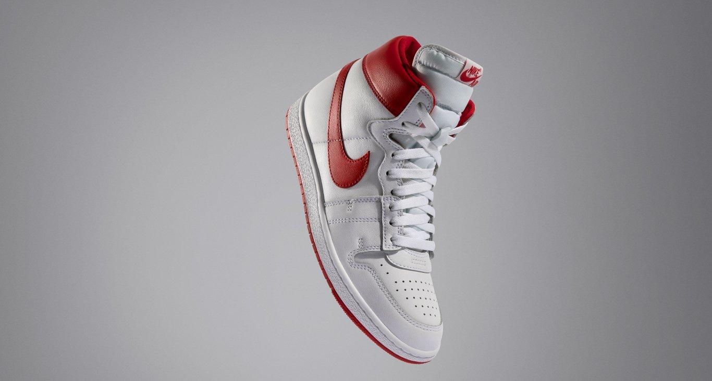
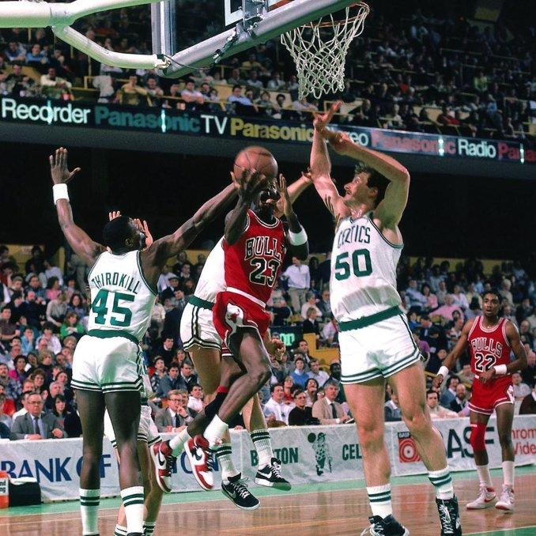
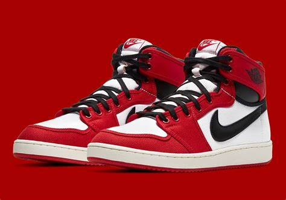

SNEAKERS
¿QUÉ SON LOS SNEAKERS?
Si la primera vez que escuchaste la palabra “sneakers” no pensaste en zapatos, no estás solo. ¿Qué son las sneakers? Se trata de un tipo de calzado deportivo muy popular. A las personas obsesionadas con las zapatillas de deporte se les llama “sneakerhead”. Probablemente, escuchaste este término más de una vez.
LOS JORDAN 1
Si hablamos de leyendas del baloncesto, es imposible que no se nos venga a la cabeza el nombre de Michael Jordan. Y lo mismo ocurre cuando hablamos de sneakers. Si tenemos que pensar en zapatillas legendarias, seguro que las Air Jordan 1 son de las primeras que mencionamos. No podía ser de otra manera, puesto que Nike se inspiró en el popular jugador de la NBA e incluso tomó su nombre para crear estas deportivas de basket tan míticas.
Fue a mediados de los años 80 cuando Nike creó la marca Jordan y, gracias a su buena acogida, siguieron lanzando un nuevo modelo cada temporada con la idea de ir renovando el calzado deportivo de Michael Jordan. Las primeras Air Jordan 1 se crearon a medida para el jugador, pero tiempo después ya se empezaron a fabricar tallas estándar para cualquier persona.
Un inicio complicado para las primeras zapatillas de Michael Jordan con Nike.
Aunque a día de hoy sigue sorprendiendo esta anécdota, la verdad es que al principio Michael Jordan no quería firmar con Nike. Él era más de adidas. O de Converse, pues eran las únicas zapatillas que se ponía en su época de estudiante. Al jugador de los Chicago Bulls no le convencían demasiado las zapatillas de Nike, a las que incluso criticó diciendo que parecían «zapatillas del diablo». Tampoco le gustaba el grosor de la entresuela, demasiado alto para él, que prefería notar con más precisión el suelo de la cancha.
Como podrás imaginar, al final consiguieron convencerle para crear una línea de zapatillas propia. Las Nike Air Jordan 1 se pusieron a la venta de forma oficial en 1985 y serían las primeras de muchas. Llegaron con un diseño high top muy propio del calzado de baloncesto, es decir, con una caña alta que cubriera el tobillo. También destacaba el logo Swoosh de Nike en el lateral y el primero de los logos de Air Jordan compuesto por un balón de baloncesto con alas.
Hasta la NBA y más allá
Michael Jordan siguió llevando sus Jordan 1 durante su segunda temporada de la NBA, la del 85/86. Las malas noticias llegaron cuando la estrella de los Bulls se lesionó gravemente el pie durante un partido contra los Golden State Warriors. Estuvo muchos partidos sin jugar para poder garantizar su recuperación y, cuando volvió, lo hizo con una edición especial de las Air Jordan 1 que Nike le había preparado para que estuviera más cómodo tras su incidente.
Los Chicago Bulls consiguieron remontar la temporada y clasificarse para los playoffs. Su rival eran los Boston Celtics, a los que no consiguieron ganar. No obstante, Michael Jordan logró una cifra de récord siendo el máximo anotador de los playoffs con 63 puntos. Fue entonces cuando Larry Bird pronunció la famosa frase de «Dios se ha disfrazado de Michael Jordan.
Los colores más emblemáticos de Air Jordan 1
Hay infinidad de versiones y de colorways de las Jordan 1 y siguen saliendo más y más cada mes, porque su éxito nunca se detiene. Aquí llega un repaso de algunos de los colores más destacados, aunque hay muchos más.
Bred: Es el color OG, con una combinación de negro y rojo.
Chicago: Es principalmente blanco y rojo, pero también tiene detalles en negro.
Royal: Es como la versión Bred, pero sustituyendo el rojo por el azul.
Shattered Backboard: Existen varios modelos, pero en casi todos ellos se junta naranja, negro y blanco.
UNC: Sus colores son blanco y azul claro.
CALIDADES
G5: Los colores, el diseño e incluso el peso de los tenis son idénticos a los originales, valen la mitad o un cuarto de lo que valen los originales.
OG: La calidad de los tenis clásicos o originales en el contexto del deporte del tenis.
TOP QUALITY: Todos ellos provienen de un fabricante de reconocido prestigio
Todos los derehos reservados Yael rodriguez
Salas Cruz Luka
Silva Olvera Diego Giovanni
Sanchez Gongalez Oswaldo David
Solorzano Arias Ervin Alexis
- COPYRIGHT @ 2024